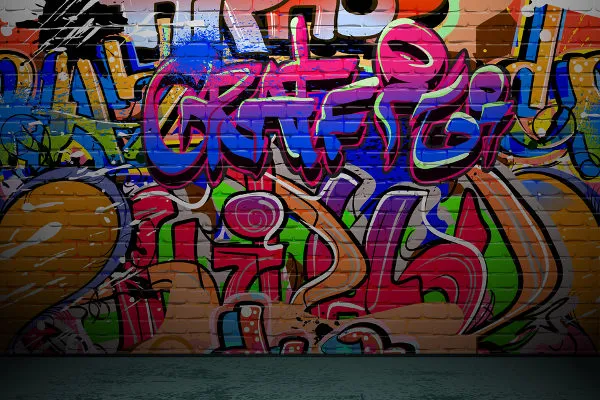
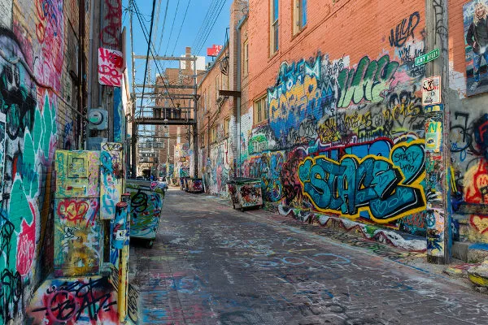

O grafite remonta à pré-história e às manifestações dos romanos antigos feitas nas paredes como forma de protesto. Com a evolução das técnicas de pintura na Idade Média, as igrejas passaram a usar essas práticas em afrescos, uma técnica de pintura feita nas paredes e no teto das igrejas.
 